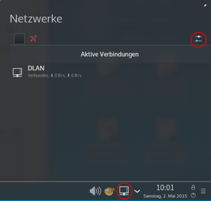
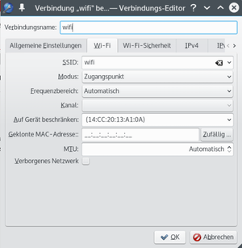
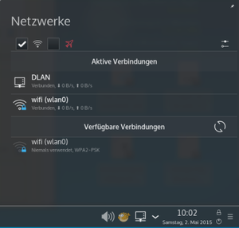

Hotspot auf PC einrichten
Achtung!
Die Verwendung dieses Howto geschieht auf eigene Gefahr. Bei Problemen mit der Anleitung melde dies bitte in der dazugehörigen Diskussion und wende dich zusätzlich an den Verfasser des Howtos.
Hinweis:
Diese Howto-Anleitung wurde zuletzt von Benn0-007 am 23.10.2016 unter Ubuntu 14.04 mit USB-WLAN-Stick erfolgreich getestet.
Problembeschreibung¶
Smartphone-Besitzer kennen das Problem, daß sie ihr Gerät nicht per WLAN mit dem PC synchronisieren oder über den PC ins internet gehen können. Dazu braucht es zB. auf dem PC einen "Hotspot". Nur unter Kubuntu und dem neuen Ubuntu 16.04 läßt sich dieser leicht einrichten. Unter älteren Ubuntu-Versionen und auch unter Windows7 braucht es dazu entweder ein Extra-Tool oder ein Script. Für ältere Ubuntu-Versionen gab es dafür das Script ap-hotspot. Dieses Script hatte in jüngerer Vergangenheit seine Tücken, und inzwischen gibt es eine einfache und bessere Lösung im Forum.
Dieser Artikel zeigt, wie in Ubuntu, Lubuntu und Kubuntu ein Hotspot eingerichtet werden kann, der - je nach Einstellung - auch sofort verfügbar ist. (Ap-hotspot muß zB. jedesmal erst per Terminal gestartet werden.) 
Anleitung¶
In Kubuntu ab 14.04 geht das mit Board-Mitteln. Da die Anleitungen für Ubuntu und Lubuntu auch auf den Board-Mitteln basieren, wird als Erstes die Einrichtung eines Hotspots in Kubuntu 15.04 beschrieben.
Zunächst Links-Klick auf das Netzwerk-Symbol im System-Abschnitt der Kontrolleiste (in Ubuntu: Panel). Es erscheint ein Fenster ähnlich der nebenstehenden Abbildung.
Dort wird das "Bearbeiten"-Symbol (rechts oben, rot eingekreist) angeklickt. Es erscheint der Verbindungs-Editor. Alle bestehenden Netzwerk-Verbindungen sind dort verzeichnet. Eine kabelgebundene Verbindung (LAN) wird dort ggf. schon eingetragen sein.
Alternativ kann der Editor per Terminal in Kubuntu 15.04 aufgerufen werden mit
kde5-nm-connection-editor
In den Versionen 14.04 geschieht das mit
kde-nm-connection-editor
 Mit Klick auf das grüne + öffnet sich eine Liste, in der Wi-Fi gewählt wird. Eine neue Wifi-Verbindung wird erstellt, indem folgende Eintragungen gemacht werden (siehe Bild rechts):
Verbindungsname: Hotspot oder Wifi oder ähnlich
Allgemeine Einstellungen: Nach Bedarf Häkchen setzen
Wi-Fi:
SSID: ist der sichtbare Name des Hotspots, kann identisch sein mit Verbindungsname
Modus: Zugangspunkt wählen ( dieser Modus [mode:ap] fehlt bei Ubuntu und Kubuntu bisher!)
Frequenzbereich: Automatisch
Auf Gerät beschränken: rechten Pfeil klicken und den sichtbar werdenden Eintrag auswählen
Wi-Fi-Sicherheit:
WPA & WPA2 Personal auswählen, das Passwort muss mind. 8 Zeichen haben.
IPv4:
Methode: Für andere Rechner freigeben

(IPv6 - Methode: Ignorieren wählen)
Abschließend OK klicken.
Im rechten Bild ist jetzt die neue WLAN-Verbindung zu sehen.
Anleitung für Ubuntu und Lubuntu¶
Auch hier wird zunächst mit Klick auf das Netzwerksymbol der NetworkManager ("Verbindungen bearbeiten") ausgewählt. Per Terminal auch mit:
nm-connection-editor
Per Klick auf "Hinzufügen" Funknetzwerk auswählen (# das deutsche Wort für WiFi). Alle Einstellungen werden wie oben für Kubuntu beschrieben gemacht. Anders als in Kubuntu heißt in Ubuntu 16.04 der gewünschte Modus "Hotspot". Diesen auswählen und ansonsten die Einstellungen wie für Kubuntu übernehmen. Fertig.
In älteren Ubuntu-Versionen kann als Modus nicht "Zugangspunkt" oder "Hotspot", sondern nur "Ad-hoc" gewählt werden. Dieser Modus ist jedoch ungeeignet für die Synchronisation mit Smartphones.
Der Unterbau des NetworkManagers kann inzwischen allerdings auch einen "echten" Hotspot im Master-Modus erzeugen.
Dazu einfach über die grafische Oberfläche zuerst einmal eine Verbindung im Ad-Hoc-Modus anlegen und den gewählten Verbindungsnamen merken. Wenn dieser z.B.: Hotspot ist und die Verbindung mit "Alle Benutzer dürfen dieses Netzwerk verwenden" definiert wurde, kann sie dann mit
gksudo gedit /etc/NetworkManager/system-connections/''Hotspot'' # (in Lubuntu: gksudo leafpad)
im Editor (gedit, leafpad) bearbeitet werden. Dort dann den Modus von
mode=adhoc
auf
mode=ap
ändern. Eventuell noch kontrollieren, ob wirklich "Gemeinsam mit anderen Rechnern" gewählt wurde:
[ipv4] method=shared
und ob WPA2 als Verschlüsselung zum Einsatz kommt. Standardmäßig sollte das dann so aussehen:
[802-11-wireless-security] key-mgmt=wpa-psk proto=rsn; pairwise=ccmp; group=ccmp; psk=geheimespasswort
Wenn du diese Verbindung aktivierst z.B.: mit
nmcli con up id Hotspot
ist nun bei
iwconfig
statt "Ad-hoc"
wlan0 IEEE 802.11bgn ESSID:"Hotspot"
Mode:Ad-Hoc Frequency:2.412 GHz Cell: AA:AA:AA:AA:AA:AA
Tx-Power=16 dBm
Retry long limit:7 RTS thr:off Fragment thr:off
Power Management:offals Modus "Master" erkennbar:
wlan0 IEEE 802.11bgn Mode:Master Tx-Power=16 dBm
Retry long limit:7 RTS thr:off Fragment thr:off
Power Management:offDiese Anleitung funktioniert für Ubuntu und Lubuntu bis 14.10 (s. Thema im Forum).
Ab 15.04 funktioniert die Änderung per NetworkManager, wenn sie mit
sudo nmcli con mod Hotspot wifi.mode ap
durchgeführt wird. Danach dann mit
sudo nmcli con up id Hotspot
Starten der Verbindung. (Die oben stehenden Befehle müssen natürlich an den gewählten Namen angepaßt werden. Hier beziehen sie sich auf den Beispiel-Namen "Hotspot".)
Damit sollte ein stabiler WLAN-Hotspot auch für ein Smartphone verfügbar sein. Mit Hilfe einer FTP-Server-App auf dem Smartphone können per FTP-Verbindung jetzt Daten zwischen PC und Smartphone ausgetauscht werden, und das Smartphone hat eine Internet-Verbindung über den PC-Hotspot.
Voraussetzung dafür, daß alles funktioniert, ist ein kompatibler WLAN-USB-Stick oder eine WLAN-Karte, wo die unter WLAN Router beschriebenen Voraussetzungen erfüllt sind. Der Verfasser verwendet inzwischen mit Erfolg einen TL-WN722N Stick.
Hinweis:
Bei Änderungen im Profil der für den Hotspot angelegten Verbindung im NetworkManager, wie etwa des Passwortes oder eine Verbindungsfreigabe für alle Nutzer, wird die zuvor erfolgte manuelle Änderung des mode wieder zurückgesetzt. Daher muss der mode dann noch einmal manuell auf ap umgeschrieben werden, wie zuvor beschrieben wurde.
 - Übersicht aller Howto-Artikel
- Übersicht aller Howto-Artikel- Erstellt mit Inyoka
-
 2004 – 2017 ubuntuusers.de • Einige Rechte vorbehalten
2004 – 2017 ubuntuusers.de • Einige Rechte vorbehalten
Lizenz • Kontakt • Datenschutz • Impressum • Serverstatus -
Serverhousing gespendet von